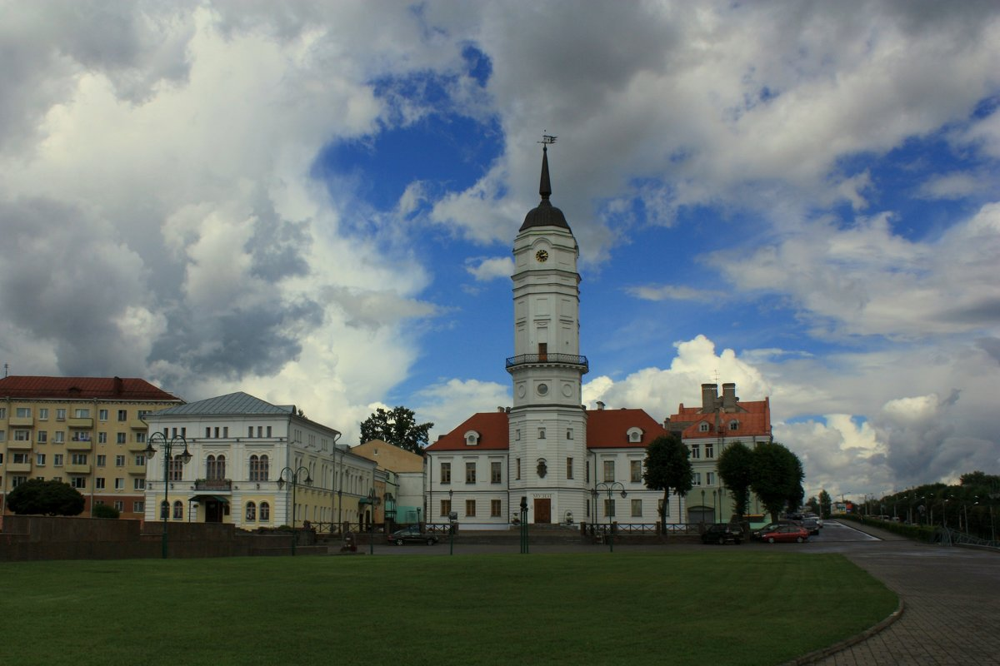

Ратуша в Могилёве – красивейшее здание с непростой историей и уникальной архитектурой.В 1578, в Могилёве началось возведение городской ратуши. Первоначально ратуша была деревянной, поэтому много раз сгорала дотла, и её местонахождение менялось. 4 сентября 1679 года горожане приступили к строительству каменной, а полностью строительство завершили в 1698 году.Здание было самым высоким в городе. В 1780 году с её смотровой площадки Могилёвом любовались императрица Екатерина II и австрийский император Иосиф II.Во время героической обороны Могилева, летом 1941 года, над городом все время реял алый сцяг, установленный на Ратуше, как символ борьбы народа с захватчиками. 23 мая 1992 года произошла символическая закладка 1-го камня на старом месте будущей Ратуши. Однако реально к проекту и строительству приступили лишь в 2007 году. В церемонии открытия начала строительства Ратуши принял участие Президент Республики Беларусь Александр Григорьевич Лукашенко, который заложил в ее основание напутствие будущим потомкам. На башне Ратуши размещены механические часы. К изготовлению деталей и механизмов часов были привлечены предприятия города.
Адрес: Ленинская ул., 1А, Могилёв